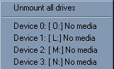
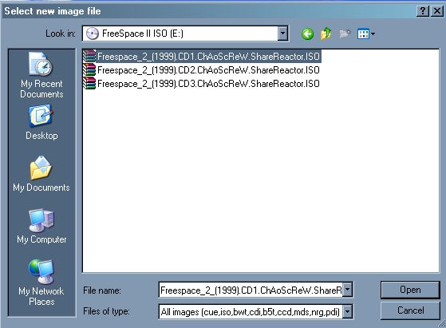

Installing FreeSpace 2
Where can I get FS2?
How do I install FS2? I have the downloaded the retail version.
How do I install FS2? I have the retail CDs.
How do I install FS2? I have the Home of the Underdogs download.
Where can I get FS2
The first step is of course to get hold of FS2. You can find info on that here.
How do I install FS2? I have the downloaded the retail version.
Depending on where you have downloaded the files from you will have one
of 3 things most likely. Three .rar files, three .zip files or three
.iso or .bin files. To open the rar or zip files you can use WinRAR
(check the glossary page for more details).
If you have a single zip file containing a load of rar files and
an exe you have the Home of the Underdogs version not the retail
version. Remember that if you ever have to ask for help.
Once you have extracted the contents you should be looking at
.iso or .bin files. These are basically images of the 3 FS2 CDs. To
install the game you need to turn them into working CDs. You have two
options now :-
Burn the images
If you have a CD burner your CD burning software will almost certainly
have a "Burn Image" option. Using this you can burn the images and end
up with 3 physical CDs. You can then follow the guide below
Mount the images
Your second choice is to mount the CDs. This means using a special
piece of software to pretend that your computer has another CD drive
and that the image files are physical CDs you can put in it. Your CD
burning software may have an option to do this too (Nero and Alcohol
120% do for instance). If you don't have such a piece of software you
can download Daemon Tools for free. I'll be showing you how to use Daemon Tools as it's what I use.
First download and install Daemon Tools. It should prove fairly
straightforward to install. Once installed it will put a new icon in
your system tray. Left click on this and the pop up will appear

Your drive letters will be different and you'll only have one virtual
drive (If you right click instead and look at the virtual CD option you
can add more. Having three virtual CD drives makes it much quicker to
install FS2). Choose a drive which has "No media" and a new window will
pop up.

Select the first ISO file (The one which corresponds to CD1). The FS2 installer will begin. You can now follow the guide below (when asked for a different CD simply go back to the Daemon Tools System Tray icon and pick a different CD).
How do I install FS2? I have the I have the retail CDs.
The FS2 installer is pretty easy to use so I'm only going to point out
a few pitfalls that could cause you problems later rather than guide
you through the whole install.
- Do not install to C:\Program Files - Don't use any path with a space or a hyphen in it. This may cause you minor problems when using FS2_Open later. C:\Games is fine for instance.
- Do not untick the High Resolution Artwork - Unless you want to doom yourself to playing in 640x480 (Even in FS2_Open you may have problems with higher resolutions).
- If you skip the other options, you may copy them from the CD later.
- Some people have reported getting an error due to missing
autoexec.nt (Sometimes it says "system file is not suitable"). You can
find the solution to that problem here.
Congratulations you now have a (hopefully) working copy of FS2. Even if
you intend to install FS2_Open next you should run the game once. First
to check if there are any problems and second cause you'll have to
start the game once before you can patch it to 1.2 (which you should do
before trying to install FS2_Open). Playing long enough to see the
tutorial start should be long enough to detect most problems. Since you
can skip the training sims if you have to restart you may wish to play
the first one through anyway. It will give you an appreciation of the
advances in FS2_Open if you do see the original in action. You can then
quit and run the updater in the FS2 launcher.
How do I install FS2? I have the Home of the Underdogs download.
Coming (hopefully) soon. In the meanwhile check out my HotU page here.
|